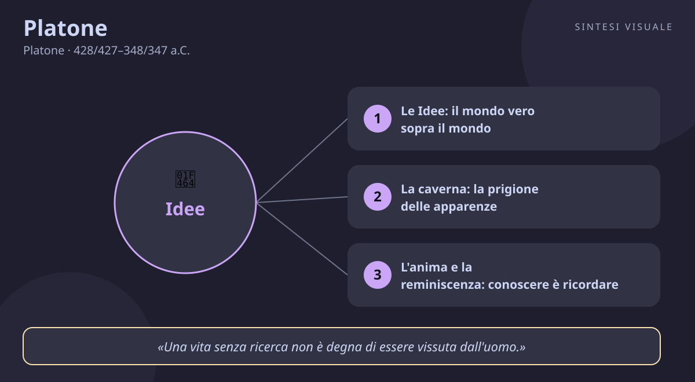

Platone
Platone · 428/427–348/347 a.C.
«La meraviglia: ecco l'unico vero inizio della filosofia»
- Mondo delle Idee
- Caverna
- Anima
- Giustizia
💬La massima
«La meraviglia: ecco l'unico vero inizio della filosofia.»
— Platone, Teeteto, 155d. In greco la parola è thaumazein: provare stupore, restare incantati. Socrate la dice al giovane Teeteto, che si dichiara stordito e meravigliato davanti a un ragionamento appena ascoltato: «Questo stato d'animo è proprio del filosofo — gli risponde — e la filosofia non ha altro principio che questo».
Spiegazione. Sembra una frase da tazza da tè, invece è una dichiarazione di guerra al modo in cui viviamo quasi sempre. La maggior parte del tempo trattiamo il mondo come uno sfondo scontato: il cielo è azzurro, il telefono squilla, il caffè è caldo, e non ci chiediamo mai perché le cose stiano così. La meraviglia è l'istante in cui lo sfondo si squarcia: un bambino che chiede «perché il mare è salato?», un adulto che alza gli occhi e si sente piccolo sotto le stelle, uno studente che resta senza parole davanti a un teorema. In quell'istante smettiamo di usare il mondo e cominciamo a interrogarlo. Per Platone è proprio lì che nasce il filosofo: non nei libri, ma nello stupore che ci costringe ad ammettere che non capiamo ciò che credevamo di capire.
Il punto sottile. Attenzione: la meraviglia di cui parla Platone non è la curiosità da turisti, quella che fotografa tutto e non trattiene niente. È uno stupore che punge: ti lascia senza risposte e ti mette in cammino per cercarle. Teeteto, nel dialogo, prova vertigine — e Socrate lo rassicura dicendogli che quella vertigine è il segno che sta partendo il pensiero. Chi non si meraviglia mai, per Platone, non è maturo né disincantato: è semplicemente addormentato. Il sonno più profondo non è quello degli occhi chiusi, ma quello delle domande mai poste.
Perché conta oggi. Viviamo sommersi da spiegazioni pronte: chiedi tutto al telefono, ricevi una risposta in due secondi, e la meraviglia muore prima ancora di nascere. Scorriamo titoli, guardiamo riassunti, collezioniamo opinioni senza esserci mai stupiti di nulla. Platone ci ricorda che la conoscenza vera comincia esattamente dove finisce la risposta rapida: nel momento in cui qualcosa ti ferma, ti spiazza e ti costringe a pensare con la tua testa. Senza meraviglia non c'è filosofia; senza filosofia — intesa come amore per la verità — restano solo slogan.
👤Biografia
Platone nacque ad Atene nel 428 o 427 a.C., in piena guerra del Peloponneso, da una delle famiglie più nobili della città: la madre Perictione discendeva dal grande legislatore Solone, e tra i parenti c'erano Crizia e Carmide, che sarebbero diventati capi dei Trenta tiranni. Il suo vero nome era Aristocle — «Platone», che significa «largo, dalle spalle larghe», era probabilmente un soprannome da palestra, perché da giovane si allenava nella lotta e sognava forse la carriera atletica più che quella filosofica.
L'incontro che cambiò tutto. Da ragazzo Platone frequentò i poeti e i maestri di retorica, e scrisse tragedie che — racconta la tradizione — bruciò dopo aver ascoltato Socrate parlare in piazza. Socrate non aveva scuola né libri: interrogava chiunque incontrasse, con domande semplici e spietate, e mostrava che quasi nessuno sapeva davvero ciò di cui parlava. Platone divenne il suo allievo più brillante e lo seguì per circa otto anni, finché nel 399 a.C. Atene condannò Socrate a bere la cicuta con l'accusa di corrompere i giovani e di non credere negli dèi della città. Platone aveva circa trent'anni, era presente al processo e ne restò segnato per sempre: quasi tutti i suoi dialoghi hanno Socrate come protagonista, come se per quarant'anni avesse continuato a farlo parlare per non lasciarlo morire.
Viaggi e scottature siciliane. Dopo la morte del maestro, Platone lasciò Atene: fu a Megara, forse in Egitto e a Cirene, poi nell'Italia meridionale, dove conobbe i pitagorici — matematici e mistici insieme — che lo impressionarono moltissimo. Nel 388 o 387 a.C. approdò a Siracusa, la città più ricca e potente dell'Occidente greco, governata dal tiranno Dionisio I. Lì strinse amicizia con Dione, cognato del tiranno, e provò a spiegare al tiranno come dovrebbe governare un re giusto. Finì male: Dionisio lo prese in antipatia e, secondo il racconto tradizionale, Platone fu perfino venduto come schiavo a Egina e poi riscattato dagli amici. Lezione imparata: i tiranni non amano le lezioni.
L'Accademia. Tornato ad Atene intorno al 387 a.C., Platone acquistò un terreno presso il bosco sacro all'eroe Academo e vi fondò la sua scuola, l'Accademia: lezioni, discussioni, matematica, astronomia e filosofia, con un motto leggendario sulla porta — «non entri chi non sa di geometria». La scuola durò quasi mille anni, fino alla chiusura ordinata dall'imperatore Giustiniano nel 529 d.C. Eppure Platone non rinunciò alla politica: tornò altre due volte a Siracusa (nel 367 e nel 361 a.C.), sotto Dionisio II, nel tentativo di formare un re-filosofo insieme all'amico Dione. Entrambi i viaggi finirono in litigi, pericoli e fughe. La storia, insomma, gli ripeté due volte la stessa lezione.
Il carattere. Aristocratico nei modi ma nemico delle aristocrazie corrotte; ironico e tagliente nei dialoghi, ma capace di slanci poetici che fanno dei suoi testi i più belli della filosofia antica. Non si sposò mai, non ebbe figli: la sua famiglia furono i libri e gli allievi. Il più grande di questi, Aristotele, restò con lui vent'anni e poi lo criticò senza pietà — e Platone, a quanto pare, lo aveva previsto: il suo capolavoro, la Repubblica, è tutto costruito sull'idea che la verità conti più dell'amicizia. Morì ad Atene nel 348 o 347 a.C., a circa ottant'anni, secondo la leggenda durante una festa di nozze, con la penna in mano.
📌Sintesi del pensiero
Platone sostiene che il mondo che vediamo e tocchiamo non è la realtà vera, ma solo un'ombra di una realtà superiore e perfetta: il mondo delle Idee, forme eterne e immutabili — la Bellezza in sé, la Giustizia in sé, il Bene in sé — di cui le cose sensibili sono copie sbiadite. Conoscere significa ricordare: l'anima, prima di nascere, ha contemplato le Idee e le dimentica nel corpo; la filosofia, con il dialogo e la meraviglia, la aiuta a rammentarle.
- Metodo: il dialogo socratico — domande brevi, risposte brevi, confutazione degli errori — fino a partorire la verità, come una levatrice partorisce i bambini (la maieutica).
- Antropologia: l'uomo è un'anima immortale caduta in un corpo; il corpo desidera e teme, l'anima ragiona e ricorda. Vivere bene significa dare il comando alla parte migliore.
- Politica: come nell'anima comanda la ragione, così nella città dovrebbero comandare i sapienti: i filosofi-re. Solo chi conosce il Bene può governare giustamente.
🏛️I temi fondamentali
- Le Idee: il mondo vero sopra il mondo. Prendi un cavallo: nasce, invecchia, muore, e nessun cavallo è perfetto. Eppure riconosciamo tutti i cavalli come cavalli: come facciamo, se non possediamo da qualche parte il modello del «cavallo perfetto»? Per Platone quel modello esiste davvero, in una dimensione eterna: è l'Idea. Lo stesso vale per la giustizia: nessuna legge umana è perfettamente giusta, eppure sappiamo giudicare le leggi ingiuste — perché l'anima ricorda la Giustizia in sé. Le Idee non sono pensieri nella nostra testa: sono la realtà più solida che ci sia, e le cose che tocchiamo sono solo le loro ombre tremolanti.
- La caverna: la prigione delle apparenze. È l'immagine più famosa della filosofia: uomini incatenati fin da bambini in una caverna guardano ombre proiettate su una parete e le scambiano per la realtà; discutono delle ombre, fanno premi a chi le prevede meglio, ridono di chi parla di un «fuori». Se uno si libera, esce alla luce del sole e vede le cose vere, poi torna indietro per liberare gli altri — ma i compagni lo deridono e, se potessero, lo ucciderebbero (come Atene uccise Socrate). La caverna siamo noi ogni volta che scambiamo le apparenze — i titoli dei giornali, i like, le mode, le chiacchiere — per la verità, e deridiamo chi ci invita a guardare più in alto.
- L'anima e la reminiscenza: conoscere è ricordare. Nel Menone, Socrate interroga uno schiavo che non ha mai studiato geometria e, con semplici domande, gli fa «scoprire» da solo un teorema. Come è possibile? Perché l'anima è immortale e prima di incarnarsi ha visto le verità eterne: imparare è ricordare ciò che si è dimenticato. È un'idea vertiginosa e bellissima: dentro di te c'è già tutto, sepolto sotto l'abitudine e la fretta, e il buon maestro non ti riempie la testa — ti aiuta a disseppellire ciò che sai.
- Eros: l'amore come scala verso il bello. Nel Simposio Platone descrive l'amore come una scala: si comincia amando un bel corpo, poi tutti i bei corpi, poi le belle azioni, poi le belle conoscenze, fino a contemplare la Bellezza stessa, eterna e immutabile. L'innamoramento, anche quello più fisico, è per Platone la scintilla di un'ascesa: desideriamo una persona perché intravediamo in lei qualcosa di assoluto. Quando l'amore resta fermo al primo gradino diventa possesso; quando sale, diventa filosofia. Ecco perché il vero maestro ama i suoi allievi e i veri amanti, insieme, diventano migliori.
- La giustizia e i filosofi-re. Nella Repubblica Platone costruisce lo Stato giusto come un'anima ingrandita: i produttori lavorano (come i desideri nutrono il corpo), i guardiani difendono (come il coraggio protegge), i filosofi governano (come la ragione guida). Giustizia significa che ciascuno fa il proprio mestiere senza invadere quello altrui. È una proposta scandalosa — abolizione della famiglia e della proprietà privata per i governanti, donne ammesse al governo alla pari degli uomini, duemilaquattrocento anni fa — e contiene un seme autoritario che i critici non gli hanno mai perdonato. Ma la domanda resta in piedi: vogliamo essere governati da chi sa, o da chi grida più forte?
📚Le opere principali
- Apologia di Socrate (scritta negli anni dopo il 399 a.C.). La difesa di Socrate al processo, ricostruita da Platone che era presente. Socrate rifiuta di supplicare i giudici e dichiara che continuerà a interrogare gli ateniesi perché «una vita senza ricerca non è degna di essere vissuta». È il certificato di nascita della filosofia come coraggio civile: pensare con la propria testa anche quando costa la vita.
- Simposio (composto intorno al 385–380 a.C.). Durante un banchetto, sette invitati fanno a turno l'elogio dell'amore; Socrate riferisce ciò che gli insegnò una sacerdotessa, Diotima: l'amore è desiderio di ciò che non si possiede, e la sua vera mèta è la Bellezza eterna. Il dialogo più brillante e umano di Platone: si ride, si beve, si discute, e alla fine si è saliti — quasi senza accorgersene — dal desiderio fisico alla contemplazione dell'assoluto.
- Repubblica (composta intorno al 380 a.C.). Il capolavoro: dieci libri che partono dalla domanda «cos'è la giustizia?» e costruiscono la città ideale, con l'allegoria della caverna, la teoria dell'anima tripartita e la tesi dei filosofi-re. È insieme un trattato politico, un manuale di educazione e una visione del cosmo: il libro di filosofia più commentato della storia.
- Fedone (composto intorno al 380 a.C.). L'ultimo giorno di Socrate in carcere, tra gli amici che piangono: un dialogo sereno sull'immortalità dell'anima, con gli argomenti della reminiscenza e della semplicità dell'anima. Alla fine Socrate beve la cicuta con calma, dopo aver chiesto di offrire un gallo in sacrificio al dio della medicina — come un malato che guarisce. La morte, per Platone, è la guarigione dalla malattia del corpo.
💬Massime celebri
«Una vita senza ricerca non è degna di essere vissuta dall'uomo.» — Apologia di Socrate, 38a, le parole di Socrate davanti ai giudici: l'esame quotidiano di sé e delle proprie convinzioni non è un lusso da intellettuali, è ciò che rende umana una vita. Vale la pena rileggerla ogni sera.
«Non vi sarà tregua ai mali delle città, e neppure a quelli del genere umano, finché i filosofi non diventeranno re.» — Repubblica, libro V, 473d, la tesi dei filosofi-re: chi governa dovrebbe conoscere il Bene, non limitarsi a vincere le elezioni. Da duemila anni divide i lettori — e interroga ogni campagna elettorale.
«Conosci te stesso.» — Il motto inciso sul tempio di Delfi, citato da Socrate nel Protagora (343b) e nell'Alcibiade I: prima di governare gli altri o di giudicarli, guarda dentro di te. È la frase più breve della filosofia antica e anche la più difficile da praticare.
⌛Contesto storico
- Platone visse tra il 428/427 e il 348/347 a.C., negli anni in cui Atene passò dal massimo splendore alla sottomissione. Da bambino vide la peste che devastò la città durante la guerra del Peloponneso (431–404 a.C.), il conflitto fratricida tra Atene e Sparta che dissanguò la Grecia per quasi trent'anni. Nel 404 a.C., quando aveva circa ventiquattro anni, Atene fu sconfitta: le Lunghe Mura abbattute al suono dei flauti, la flotta distrutta, la democrazia sostituita dai Trenta tiranni — guidati proprio da suoi parenti, Crizia e Carmide — che in pochi mesi fecero uccidere circa millecinquecento cittadini.
- Caduti i Trenta e restaurata la democrazia, la città volle vendicarsi dei «maestri» che avevano educato i tiranni: nel 399 a.C. processò e condannò Socrate, il maestro di Platone. Capite lo choc: la democrazia, il regime della libertà di parola, uccide l'uomo più libero di Atene. Da quel trauma nasce tutta la diffidenza di Platone verso la democrazia ateniese — per lui il governo dei molti, senza sapere, diventa facilmente il governo delle passioni e dei demagoghi.
- Intorno a lui il mondo greco cambiava padrone: dopo la vittoria, Sparta si rivelò un'egemone brutale; poi Tebe la umiliò a Leuttra nel 371 a.C.; e intanto a nord cresceva la Macedonia di Filippo II, che negli anni della vecchiaia di Platone stava già preparando la falange con cui suo figlio Alessandro avrebbe conquistato il mondo. La pòlis indipendente — quella per cui Platone aveva disegnato la città ideale — stava diventando un ricordo, mentre il futuro apparteneva ai grandi regni.
- La società in cui crebbe era però anche la più vivace della storia antica: teatri affollati per le tragedie e le commedie di Aristofane, l'assemblea dove ogni cittadino votava, botteghe e simposi dove i sofisti — Protagora, Gorgia, Prodico — insegnavano a pagamento l'arte di vincere qualsiasi discussione. Le donne libere restavano chiuse in casa ed escluse dalla politica — e proprio per questo stupisce che Platone, nella Repubblica, proponga governanti donne alla pari degli uomini: uno scandalo per i suoi contemporanei, un secolo di anticipo su tutti.
- Da chi è stato influenzato Socrate, il maestro interrogatore che non scrisse nulla; i pitagorici dell'Italia meridionale, con il culto dei numeri e l'idea dell'anima immortale; Eraclito, con il mondo sensibile in eterno flusso; Parmenide ed Elea, con l'essere uno e immutabile — Platone prese il flusso di Eraclito per le cose e l'immutabilità di Parmenide per le Idee, e li fece stare insieme.
- A chi ha trasmesso fondò l'Accademia, dove Aristotele studiò vent'anni prima di contraddirlo; attraverso Plotino e il neoplatonismo plasmò sant'Agostino e tutto il cristianesimo medievale; Marsilio Ficino lo fece rinascere nel Rinascimento; e ancora oggi — diceva il filosofo Whitehead — «tutta la filosofia occidentale non è che una serie di note a margine di Platone».
🌊L'eredità
- Platone non fondò una scuola: fondò il modo stesso di fare filosofia in Occidente. Aristotele, il suo allievo più geniale, passò vent'anni all'Accademia e poi smontò pezzo per pezzo la teoria delle Idee — ma lo fece con gli strumenti logici imparati dal maestro, e senza Platone non esisterebbe nemmeno Aristotele.
- Nei primi secoli dopo Cristo il suo pensiero risorse nel neoplatonismo di Plotino, che fece delle Idee un unico Principio divino: da lì Platone entrò nel cristianesimo attraverso sant'Agostino, che trovò in lui la filosofia più vicina alla fede, e nel mondo islamico ed ebraico attraverso i grandi commentatori. Per tutto il Medioevo, anche quando Aristotele dominava le università, Platone restava il filosofo dei mistici, dei poeti e degli innamorati.
- Il Rinascimento lo rimise sul trono: Marsilio Ficino tradusse tutti i dialoghi in latino, e l'Accademia neoplatonica di Firenze — con Lorenzo il Magnifico e Pico della Mirandola — fece di Platone il maestro dell'umanesimo. L'idea che l'amore elevi l'anima (l'«amor platonico») conquistò la poesia e la pittura d'Europa.
- Nella modernità ognuno ha preso il «suo» Platone: i razionalisti l'amore per la matematica, i romantici l'eros e il mito, i totalitarismi del Novecento — con l'accusa famosa di Karl Popper — il modello dello Stato autoritario, e le democrazie liberali l'ideale del governare con competenza. Duemilaquattrocento anni dopo, ogni volta che distinguiamo le apparenze dalla realtà, parliamo platonico senza saperlo.
🌍Esempi di oggi
- La bacheca infinita dei social. Scorri decine di vite perfette — vacanze, successi, sorrisi — e ti senti la brutta copia del mondo. Poi incontri un amico dal vivo e scopri che dietro quelle foto c'erano ansie, litigi e notti insonni. Le immagini sullo schermo erano le ombre sulla parete della caverna: Platone ti invita a voltarti verso l'uscita, a cercare le persone vere invece delle loro proiezioni, e a non farti incatenare dai giudizi della folla digitale.
- Il bambino che chiede «perché?». Un nipote di cinque anni ti tempesta: perché il cielo è blu, perché i cani abbaiano, perché bisogna dormire. La tentazione è tappargli la bocca con il telefono. Ma quel «perché» a raffica è il thaumazein allo stato puro: la meraviglia del Teeteto. Rispondere sul serio — o ammettere «non lo so, scopriamolo insieme» — significa tenere accesa la scintilla da cui nasce ogni pensiero. Spegnerla significa fabbricare, da grande, un altro consumatore di risposte pronte.
- Il voto dato «a chi grida più forte». In campagna elettorale il candidato più preparato parla di bilanci e perde; quello che urla slogan semplici e nemici facili vince. Platone storcerebbe il naso ma non si stupirebbe: è la democrazia ateniese che condannò Socrate, il governo delle passioni invece che del sapere. La sua provocazione resta valida: prima di votare — e prima di condividere — chiediti se stai scegliendo con la ragione o con la pancia, e se chi ti guida conosce la strada o sa solo gridare il percorso.
📄Platone (428/427–348/347 a.C.), il filosofo che inventò un secondo mondo per spiegare il primo
Ritratto (busto in marmo, copia romana da originale greco, Musei Capitolini — pubblico dominio, Wikimedia Commons):
🧠Quiz
Rispondi in chat con la lettera di ogni risposta, es. 1B 2A 3C 4D 5B.
1 Cosa significa, per Platone, che la meraviglia è «l'inizio della filosofia»?
2 Cosa sono le Idee nella filosofia di Platone?
3 Nell'allegoria della caverna, cosa rappresentano le ombre sulla parete?
4 Perché la condanna di Socrate (399 a.C.) segnò per sempre il pensiero di Platone?
5 Chi fu l'allievo più famoso di Platone, che studiò vent'anni all'Accademia prima di criticarlo?
✅Soluzioni — tocca per vedere
- C) Lo stupore davanti a ciò che non capiamo ci mette in cammino verso la verità. La meraviglia (thaumazein) non è curiosità da turisti: è la vertigine che ci fa ammettere di non capire e ci costringe a pensare. Senza di essa restano solo abitudine e risposte pronte.
- A) Modelli eterni e perfetti di cui le cose sensibili sono copie. Nessun cavallo è perfetto, nessuna legge è perfettamente giusta: eppure li giudichiamo, perché l'anima ricorda i modelli — le Idee — contemplati prima della nascita.
- D) Le apparenze scambiate per realtà. I prigionieri discutono delle ombre e premiano chi le prevede meglio; chi esce alla luce e torna per liberarli viene deriso — come Atene derise e uccise Socrate. La caverna è ogni bolla di apparenze, compresi i social di oggi.
- B) La democrazia uccise l'uomo più giusto. Il trauma del 399 a.C. convinse Platone che il governo dei molti senza conoscenza diventa governo delle passioni: di qui la critica alla democrazia ateniese e la proposta che a governare siano i sapienti.
- A) Aristotele. Entrò nell'Accademia e vi restò circa vent'anni, fino alla morte di Platone; poi criticò la teoria delle Idee con gli strumenti logici imparati dal maestro. (Alessandro fu allievo di Aristotele, non di Platone; Epicuro e Diogene seguirono altre strade.)
🔁Ripasso
Meraviglia ≠ ingenuità. Il thaumazein non è lo stupore di chi crede a tutto: è lo stupore di chi smette di credere a ciò che ha sempre dato per scontato e comincia a interrogarsi. Il bambino che chiede «perché?» e lo scienziato che resta perplesso davanti a un dato anomalo fanno la stessa cosa: aprono una domanda invece di chiuderla.
Idee ≠ idee qualsiasi. Quando Platone scrive «Idea» con la maiuscola intende una realtà eterna e perfetta — la Giustizia in sé, la Bellezza in sé — non un'opinione o un'intuizione. Le nostre «idee» cambiano ogni giorno; le Idee di Platone non cambiano mai, ed è proprio per questo che possono fare da misura delle cose che cambiano.
Caverna ≠ elogio della fuga dal mondo. Platone non dice di disprezzare il mondo e scappare: il prigioniero liberato torna indietro per liberare i compagni, rischiando la derisione e la morte. La filosofia non è evasione verso il cielo delle Idee, ma ritorno nella caverna con occhi nuovi — per cambiare la città, non per abbandonarla.
Domani un nuovo filosofo. Se rispondi al quiz, ti darò il punteggio e un ripasso mirato solo su ciò che hai sbagliato.
🖼️In un colpo d’occhio

Tocca l’immagine per ingrandirla.